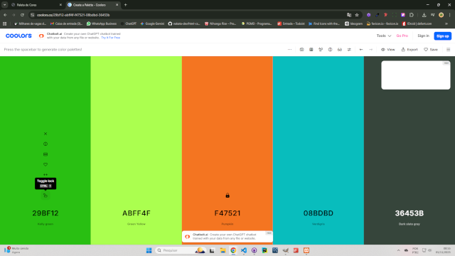
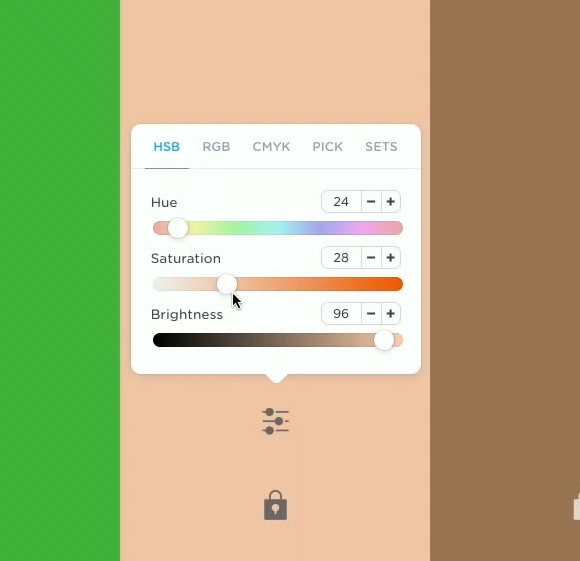

Antes de escolher cores
- Objetivo: o site precisa transmitir o quê? (confiança, energia, sofisticação...)
- Público: para quem é? (idade, estilo, setor)
- Marca: existe logo? Use 1–2 cores principais como base.
ColourLovers
É um site para explorar paletas prontas e temas. Você pode buscar por assuntos, por exemplo: pizza.
Acesse: colourlovers.com
Adobe Color
Ótimo para criar paletas e ajustar harmonia. A dica aqui é pesquisar em inglês o “sentimento” ou “sensação” que o cliente quer transmitir.
Acesse: color.adobe.com/pt/create
-
Pesquise o tema/sensação
Ex.: “italian restaurant”, “premium”, “fresh”, “minimal”, “trust”.
-
Traga 1–2 cores da logo (se existir)
Isso ajuda a manter identidade visual consistente.
-
Feche a paleta e faça download
Quando estiver satisfeito, baixe a paleta para referência.

Coolors
Ferramenta rápida e divertida para gerar paletas. Você pode “travar” cores com o cadeado e continuar gerando novas combinações.
Acesse: coolors.co
-
Start the Generator
Explore paletas prontas ou gere do zero.
-
Barra de espaço para gerar
A cada “space”, o Coolors sugere uma nova combinação.
-
Trave as cores boas
Clique no cadeado para bloquear a cor e ir refinando o conjunto.

-
Ajuste tonalidade e variações
Refine a cor até ficar harmônica com a proposta do site.

Um método simples (pra nunca errar)
- 1 cor primária (CTA, links, destaque)
- 1 cor secundária (detalhes, badges, fundos leves)
- Neutros (branco/preto/cinza para texto e layout)
- Regra de contraste: texto sempre com boa leitura no fundo